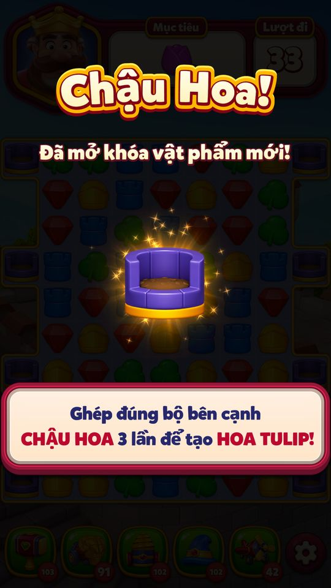
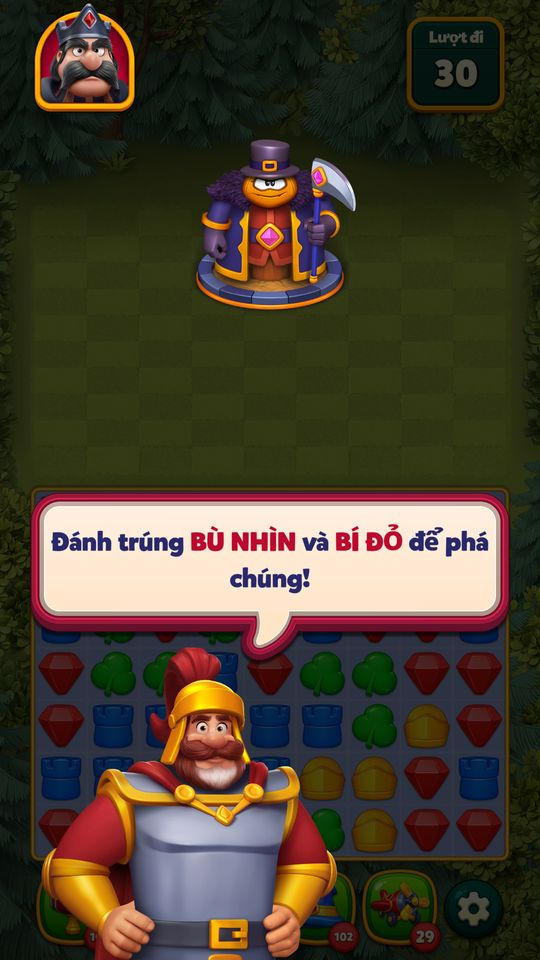

Tutorial trong level
Tutorial trong màn chơi gắn cứng theo số level, gồm bốn nhóm: (1) tutorial cơ bản và booster ở level 1, 8, 12, 17, 23, 27, 28 (match cạnh Box, rồi dạy Hammer, Battle…
Mô tả
- Tutorial trong màn chơi gắn cứng theo số level, gồm bốn nhóm: (1) tutorial cơ bản và booster ở level 1, 8, 12, 17, 23, 27, 28 (match cạnh Box, rồi dạy Hammer, Battle Ram, Drill, Wizard Hat, Bomber Plane đúng level mở khóa); (2) 39 tutorial level tấn công (5, 10, 55, 105, 155 … 5405) giới thiệu công trình/kẻ địch mới; (3) 62 màn giới thiệu vật cản mới (61 config
<Vật>ItemIntroductionConfig+ tutorial Jelly riêng) (ItemIntroduction) đúng level đầu tiên vật đó xuất hiện (Ice 4, Ivy 7, Column 11 … RubberDuck 5401); (4) tutorial động bật khi bàn rơi vào tình huống phù hợp (chạm vật phẩm đặc biệt, swap combo, thu Parrot, Kingdom Duels). - Tutorial khóa chạm ngoài ô được chỉ, tắt gợi ý, có thể cấm một số nước đi; xong thì trả quyền điều khiển.
- Không chạy ở Arena, chế độ admin online hoặc khi bot đang chơi.
Thiết kế chi tiết
Tóm tắt thiết kế
Code Tutorial gắn cứng theo số level: level 1 (match cạnh Box),  8 Búa, 12 Xe công thành, 17 Mũi khoan, 23 Mũ phù thủy, 27 combo
8 Búa, 12 Xe công thành, 17 Mũi khoan, 23 Mũ phù thủy, 27 combo  2 Electro Ball, 28 Máy bay ném bom — trùng đúng level mở từng booster; booster bị khoá thì tutorial không hiện.
2 Electro Ball, 28 Máy bay ném bom — trùng đúng level mở từng booster; booster bị khoá thì tutorial không hiện.
Code 39 level tấn công có tutorial giới thiệu kẻ địch: 5, 10, 55, rồi mỗi 50 level tới 505, mỗi 100 level tới 1.005, sau đó mỗi 200 level tới 5.405. 62 level có hộp giới thiệu vật cản mới (61 config <Vật>ItemIntroductionConfig + tutorial Jelly riêng), luôn đặt ở level đầu tiên vật đó xuất hiện.
Code Trong tutorial: nền tối chừa ô được chỉ, bàn tay chỉ nước, chỉ chạm được ô chỉ định, có thể cấm nước đi ở ô khác, tắt gợi ý, khoá nút Back; tối thiểu 0,2 s giữa các bước. Xong mới ném booster đầu trận và vào Play.
Code Tutorial động hiện khi bàn có sẵn tình huống: chạm power-up (level 5–19, còn ≥ 6 lượt), swap combo (5–27), thu Vẹt (4.001), Kingdom Duels. Chỉ một lần (bit trong UserTutorialManager.Tutorials).
Code Không chạy ở Arena, admin online hoặc khi bot chơi. Tutorial cứng chạy lại mỗi lần chơi lại level; level có tutorial không bị thay bằng level reactivation và không được ghi file resume trong lúc tutorial chạy.
14/11:đã chụp overlay giới thiệu Chậu Hoa ở201 và bàn sau đóng tại LevelSets. Các tutorial level1/booster/combo27/attack/dynamic vẫn còn UC riêng.
14/11, đợt 4: Đã chụp tutorial Bù nhìn và Bí đỏ ở màn 205. Sau khi đóng hướng dẫn, các booster đầu trận mới xuất hiện. Chưa kiểm chứng đủ 39 tutorial tấn công.
Luồng người chơi từng bước
- Chọn tutorial cho levelClientCodeSau animation bàn vào,
PrepareTutorial(bỏ qua nếu Arena / online / bot) →CreateTutorialForLevel: tutorial cứng 1/8/12/17/23/27/28 → nếu không có thì tutorial tấn công (AttackItemData) → hộp giới thiệu vật (ItemData). Richard's Journey có LevelTutorial1RockFall riêng. - Hộp giới thiệu vật mớiGiao diệnCode
ItemIntroductionTutorialtải prefab từ bundlegameplay/introduction_<khoảng level>/<vật>(vật L1–300 có sẵn trong Resources), hiện tranh, tiêu đề, câu hướng dẫn và âm thanh; chạm để tiếp tục. - Tutorial level 1Giao diệnCodeBàn tay chỉ một swap tạo match cạnh Box, chữ “Make a match next to a BOX to break it!”.
- Tutorial boosterGiao diệnCodeLevel 8/12/17/23/28: nút booster được tô sáng và gắn nhãn miễn phí (
CreateFreeTextForBooster), người chơi chọn booster rồi bàn tay chỉ ô (Búa: “Tap on the item to clear it from the board!”). Tutorial level 8 là bắt buộc. Dùng xong (OnBoosterDeselect) thì hoàn tất. - Tutorial level tấn côngGiao diệnCodeLevel 5: “The Dark King is attacking! Fight back to protect our kingdom!” (hành vi khác khi đã thử level > 1 lần); level 10: Golem; level 55: tháp pháo hoa… Kẻ địch dừng bước khi tutorial đang chạy.
- Khoá điều khiểnClientCode
BeforeTutorialStarted: tắt gợi ý, khoá chạm (“Touch Disabled”), khoá nút Back;DisableImpossibleMoveForCellcấm nước ở ô khác. Mỗi bước mở chạm đúng ô cần thao tác. - Làm đúng nướcNgười chơiCodeSwap/chạm đúng ô (
OnSwap/OnTap→MoveNextStep) hoặc bấm Continue; tối thiểu 0,2 s giữa hai bước. - Kết thúc tutorialClientCode
TutorialComplete: mở chạm, bật lại gợi ý →LevelStarter.LevelTutorialCompleteném booster đầu trận và chuyển sang Play. - Tutorial động: chạm power-upGiao diệnCodeKhi bàn đứng yên, người chơi đi được, có power-up trên bàn, level 5–19, còn ≥ 6 lượt, không phải level tấn công: “You can tap on power-ups to explode them!”.
- Tutorial động: swap comboGiao diệnCodeCó 2 power-up kề nhau tạo được combo, level 5–27, không phải level tấn công: “You can swap two power-ups to make a more powerful explosion!”.
- Tutorial động theo level và eventGiao diệnCodeLevel 4.001: hướng dẫn đưa Vẹt xuống đáy (
DynamicParrotCollectTutorialCreator); Kingdom Duels có tutorial điểm và trạng thái khoá, mỗi loại một lần mỗi level. - Playtest 12/11/2026 — bằng chứng quan sáttesterPlaytestCác ảnh là quan sát từng bước. Mode/override ghi trong appendix/playtest-20261112; chưa tương đương toàn UC đã pass.

Lần vào201 fixture: giới thiệu Chậu Hoa, ghép cạnh3lần để tạo Hoa Tulip. Sau đóng overlay xem CORE_201_default_ready ở LevelSets; chưa kiểm chứng mọi tutorial. 
Tutorial205:Đánh trúngBÙ NHÌNvàBÍ ĐỎđểpháchúng;30lượt,boardtối,chưa némboosterđầutrận. Tapđóng→ảnh tutorial2 ởAttackLevels.


Tutorial cứng (code: CreateTutorialForLevel, BoosterTypeExtensions)
| Level | Tutorial | Dạy gì | Ghi chú |
|---|---|---|---|
| 1 | LevelTutorial1 | match cạnh Box để phá | “Make a match next to a BOX to break it!” |
| 8 | LevelTutorial8 | Búa (Hammer) | bắt buộc; booster mở ở L8 |
| 12 | LevelTutorial12 | Xe công thành (Battle Ram) | mở L12 |
| 17 | LevelTutorial17 | Mũi khoan (Drill) | mở L17 |
| 23 | LevelTutorial23 | Mũ phù thủy (Wizard Hat) | mở L23 |
| 27 | LevelTutorial27 | combo 2 Electro Ball | suy luận từ ShowBallBallTutorial |
| 28 | LevelTutorial28 | Máy bay ném bom (Bomber Plane) | BomberPlaneTutorialLevel = 28 |
Hộp giới thiệu vật cản theo khoảng level (code: LevelTutorialManager..cctor ItemData)
| Khoảng | Số hộp | Level giới thiệu |
|---|---|---|
| 1–500 | 24 | Ice 4, Ivy 7, Column 11, Birdhouse 16, ChaliceBox 21, Vase 31, MagicOrb 41, Turtle 51, Lantern 61, Wall 71, Gnome 81, Snowman 91, SteamBomb 101, Knight 121, Target 141, DragonBox 161, MetalCrate 181, FlowerPot 201, Log 221, TurtleHouse 251, Jelly 301, Safe 351, Curtain 401, Magnet 451 |
| 501–1.500 | 15 | Cannon 501, Clock 551, MetalColumn 601, Gem 651, Lyre 701, Lily 751, GnomeHelmet 801, Lightbulb 851, Volcano 901, Chain 951, Mask 1001, MagicCards 1101, Border 1201, GiftBox 1301, Starfish 1401 |
| 1.501–5.600 | 23 | Tablet 1501, JellyMaker 1601, Puzzle 1701, Barrel 1801, Armory 1901, Flowers 2001, MagicGlobe 2201, ScrollTube 2401, Penguin 2601, Mosaic 2801, Gong 3001, Spaceship 3201, Timber 3401, Mushrooms 3601, PowerCapsules 3801, Parrot 4001, Mace 4201, Accordion 4401, IceFan 4601, GiantGnome 4801, Mole 5001, Fireworks 5201, RubberDuck 5401 |
Code Tổng 62 (61 ItemIntroductionConfig + JellyItemIntroductionTutorial). Box ở L1 dùng tutorial cứng thay cho hộp giới thiệu.
Tutorial tấn công (code: AttackItemData, 39 level)
| Nhịp | Level |
|---|---|
| Mở đầu | 5, 10, 55 |
| Mỗi 50 level | 105, 155, 205, 255, 305, 355, 405, 455, 505 |
| Mỗi 100 level | 605, 705, 805, 905, 1005 |
| Mỗi 200 level | 1205, 1405 … 5405 (22 level) |
Tutorial động (code: ADynamicTutorialCreator)
| Tutorial | Điều kiện | Text |
|---|---|---|
| Chạm power-up | level 5–19, còn ≥ 6 lượt, không tấn công, chưa xem | You can tap on power-ups to explode them! |
| Swap combo | level 5–27, có cặp power-up kề tạo combo, không tấn công | You can swap two power-ups to make a more powerful explosion! |
| Thu Vẹt | level 4.001 | ParrotTutorialText2 |
| Kingdom Duels | level trong event Kingdom Duels | tutorial điểm / khoá, một lần mỗi level |
Vận dụng cho game khác
- Dạy booster đúng level mở khoá và cho dùng thử miễn phí ngay trong level đó: người chơi nhớ công dụng và có lý do mua lại sau.
- Một hộp giới thiệu cho mỗi luật mới: 62 hộp trong 5.400 level, dày ở đầu (24 hộp trong 500 level đầu) rồi giãn ra — đủ “đồ mới” mà không quá tải.
- Tutorial động theo tình huống thay vì level dựng sẵn: ít gián đoạn, chỉ xuất hiện khi người chơi thật sự có power-up/combo trong tay.
- Khoá chạm + cấm nước sai khiến người chơi không thể “lỡ” tutorial; kết thúc tutorial mới ném booster để không làm rối bàn.
- Nhận định Rủi ro: tutorial cứng chạy lại mỗi lần chơi lại level (L8, L12…) — người chơi kẹt sẽ xem đi xem lại; RK chỉ xử lý riêng level 5 khi LevelTryCount > 1.
Ảnh cần chụp (6) — 2 ảnh đã gắn
Chụp vào screens/deep_1112/LevelTutorials/ rồi ghi tên file vào flow[].shots.
- Hộp giới thiệu vật mới: Hộp giới thiệu Ice ở level 4
- Tutorial level 1: Level 1: bàn tay chỉ match cạnh Box
- Tutorial booster: Level 8: nút Búa tô sáng với nhãn miễn phí
- Tutorial level tấn công: Level 5: “The Dark King is attacking!”
- Tutorial động: chạm power-up: Tutorial “You can tap on power-ups to explode them!”
- Tutorial động: swap combo: Tutorial swap hai power-up
Bảng tổng hợp mọi tính năng đã làm chi tiết: RoyalKingdom_ThietKeChiTiet.xlsx.
Mở khóa & điểm vào
Theo level (const/dictionary trong LevelTutorialManager): CreateTutorialForLevel cho 1, 8, 12, 17, 23, 27, 28; AttackItemData (39 level tấn công); ItemData (62 level giới thiệu vật: 61 ItemIntroductionConfig + JellyItemIntroductionTutorial); DynamicItemData {4001: Parrot}. BomberPlaneTutorialLevel = 28. Tutorial booster không hiện nếu booster còn khóa ('Can't show tutorial {0} because booster {1} is LOCKED! User Level: {2}'). Richard's Journey: LevelTutorial1RockFall chỉ khi ShouldShowRichardsJourneyLevelTutorial và journey id = 0.
Điểm vào:
- Tự chạy khi vào level có tutorial (LevelStarter.GridAnimationCompleted → PrepareTutorial)
- Tutorial động hiện giữa level khi bàn đứng yên (DynamicLevelTutorialManager.ManualUpdate)
Cách hoạt động
- Sau animation bàn vào, LevelStarter kiểm tra LevelTutorialManager.IsRunningTutorial; PrepareTutorial bỏ qua nếu LastPlayedLevelData.IsArenaLevel, IsOnline hoặc LevelWinBotManager.IsBotActive; level = GetActiveLevel (LevelFileNo).
- CreateTutorialForLevel: level thường → LevelTutorial1/8/12/17/23/27/28, nếu không có thì HasAttackItemTutorialInLevel (dict AttackItemData), rồi HasItemIntroductionInLevel (dict ItemData, tạo ItemIntroductionTutorial với config '<Vật>ItemIntroductionConfig'); Richard's Journey → LevelTutorial1RockFall.
- BeforeTutorialStarted tắt gợi ý (EnableCounter.Disable) và khóa chạm (DisableTouchForTutorial); RunTutorial gọi lần lượt ShowNextStep theo StepCount (tối thiểu 0,2 s giữa các bước — MinTimeBetweenSteps), dùng TutorialHighlightHelper (tô đen trừ ô), TutorialHandHelper (bàn tay), TutorialDialogHelper (bong bóng chữ), TutorialItemIntroductionHelper (màn giới thiệu vật), TutorialTouchHelper (chỉ cho chạm ô chỉ định), có thể DisableImpossibleMoveForCell.
- Người chơi thực hiện đúng nước (OnSwap/OnTap → MoveNextStep) hoặc bấm Continue.
- TutorialComplete mở chạm, bật lại gợi ý, onComplete → LevelStarter.LevelTutorialComplete → state Play.
- Tutorial động: DynamicLevelTutorialManager.Init tạo các creator (SpecialItemUse, Combo, theo level, KingdomDuels Score/Locked); ManualUpdate khi người chơi có thể đi và không có operation/flow chạy thì TryCreate → LevelTutorialManager.ShowDynamicTutorial.
- 14/11:đã chụp overlay giới thiệu Chậu Hoa ở201 và bàn sau đóng tại LevelSets.
- Các tutorial level1/booster/combo27/attack/dynamic vẫn còn UC riêng.
- 14/11, đợt 4: Đã chụp tutorial Bù nhìn và Bí đỏ ở màn 205.
- Sau khi đóng hướng dẫn, các booster đầu trận mới xuất hiện.
- Chưa kiểm chứng đủ 39 tutorial tấn công.
Số liệu chính
| Chỉ số | Giá trị | Nguồn |
|---|---|---|
| Level tutorial Bomber Plane | 28 | LevelTutorialManager.BomberPlaneTutorialLevel · code const |
| Khoảng tối thiểu giữa các bước | 0.2 | ALevelTutorial.MinTimeBetweenSteps · code const |
Use case (13)
Bấm vào từng use case để mở. Mở/đóng tất cả
UC-01 Tutorial level 1
Các bước- CreateTutorialForLevel(1) → LevelTutorial1
- ShowStep1: chỉ tay swap tạo match cạnh Box, chữ 'Make a match next to a BOX to break it!' (BoxTutorialText)
- Hoàn tất → state Play
| Actor | Player |
|---|---|
| Trigger | Vào level 1 |
| Điều kiện | Không Arena/online/bot |
| Kết quả | Người chơi học match và phá Box |
| Quy tắc / số liệu | StepCount 1; có chuỗi EnableOptional/DisableOptional |
| Evidence | LevelTutorialManager.CreateTutorialForLevel; LevelTutorial1.ShowStep1 |
UC-02 Tutorial booster trong level
Các bước- LevelTutorial8/12/17/23/28 (InGameBoosterTutorial)
- CreateFreeTextForBooster hiện nhãn miễn phí trên nút booster (FreeTextGo), HighlightBooster
- Người chơi chọn booster (BoosterSelected), chỉ tay vào ô mục tiêu (ví dụ Hammer: 'Tap on the item to clear it from the board!')
- OnBoosterDeselect(used) → hoàn tất; SkipStep2 nếu không cần bước 2
| Actor | Player |
|---|---|
| Trigger | Vào level 8 / 12 / 17 / 23 / 28 |
| Điều kiện | Booster tương ứng đã mở (BoosterTypeExtensions: Hammer 8, BattleRam 12, Drill 17, WizardHat 23, BomberPlane 28) |
| Kết quả | Biết dùng booster; booster lần này dùng miễn phí (suy luận từ FreeText) |
| Quy tắc / số liệu | Booster khóa → log LOCKED và không hiện; LevelTutorial8.IsOptional = false (bắt buộc) |
| Evidence | InGameBoosterTutorial.CreateFreeTextForBooster; InGameBoosterTutorial.BoosterSelected; InGameBoosterTutorial.OnBoosterDeselect; LevelTutorial8.ForceUseHammer; LevelTutorialManager.IsRunningBoosterTutorial |
UC-03 Tutorial level 27 (combo ElectroBall)
Các bước- LevelTutorial27.ShowStep1 / Step1
- OnSwap theo dõi swap, ShowBallBallTutorial
| Actor | Player |
|---|---|
| Trigger | Vào level 27 |
| Kết quả | Dạy swap 2 ElectroBall (BallBall) — suy luận từ tên hàm |
| Evidence | LevelTutorial27.ShowBallBallTutorial; LevelTutorial27.OnSwap |
UC-04 Tutorial level tấn công
Các bước- HasAttackItemTutorialInLevel(level, startTutorial) tạo LevelTutorialN
- Ví dụ level 5: 'The Dark King is attacking! Fight back to protect our kingdom!' (KingdomLevelIntroTutorialText; hành vi khác khi LevelTryCount > 1); level 10: Golem boss; level 55: 'AttackLevelFireworkTowerTutorialText'
| Actor | Player |
|---|---|
| Trigger | Vào level có trong AttackItemData |
| Kết quả | Giới thiệu đối tượng tấn công mới |
| Quy tắc / số liệu | 39 level: 5, 10, 55, 105, 155, 205, 255, 305, 355, 405, 455, 505, 605, 705, 805, 905, 1005, 1205, 1405, 1605, 1805, 2005, 2205, 2405, 2605, 2805, 3005, 3205, 3405, 3605, 3805, 4005, 4205, 4405, 4605, 4805, 5005, 5205, 5405 (mỗi 50 level tới 505, mỗi 100 tới 1005, rồi mỗi 200) |
| Evidence | LevelTutorialManager.HasAttackItemTutorialInLevel; LevelTutorial5.ShowStep1; LevelTutorial10.ShowStep1; LevelTutorialManager..cctor |
UC-05 Giới thiệu vật cản mới
Các bước- HasItemIntroductionInLevel(level, true, out introduction) → ItemIntroductionTutorial với config '<Vật>ItemIntroductionConfig' (JellyItemIntroductionTutorial cho level 301)
- TutorialItemIntroductionView.Init hiện tranh/tên vật, phát âm thanh
- Người chơi bấm tiếp tục
| Actor | Player |
|---|---|
| Trigger | Vào level đầu tiên có vật mới |
| Điều kiện | Level có trong ItemData |
| Kết quả | Màn giới thiệu vật trước khi chơi |
| Quy tắc / số liệu | 62 mục (61 ItemIntroductionConfig + JellyItemIntroductionTutorial ở 301): 4 Ice, 7 Ivy, 11 Column, 16 Birdhouse, 21 ChaliceBox, 31 Vase, 41 MagicOrb, 51 Turtle, 61 Lantern, 71 Wall, 81 Gnome, 91 Snowman, 101 SteamBomb, 121 Knight, 141 Target, 161 DragonBox, 181 MetalCrate, 201 FlowerPot, 221 Log, 251 TurtleHouse, 301 Jelly, 351 Safe, 401 Curtain, 451 Magnet, 501 Cannon, 551 Clock, 601 MetalColumn, 651 Gem, 701 Lyre, 751 Lily, 801 GnomeHelmet, 851 Lightbulb, 901 Volcano, 951 Chain, 1001 Mask, 1101 MagicCards, 1201 Border, 1301 GiftBox, 1401 Starfish, 1501 Tablet, 1601 JellyMaker, 1701 Puzzle, 1801 Barrel, 1901 Armory, 2001 Flowers, 2201 MagicGlobe, 2401 ScrollTube, 2601 Penguin, 2801 Mosaic, 3001 Gong, 3201 Spaceship, 3401 Timber, 3601 Mushrooms, 3801 PowerCapsules, 4001 Parrot, 4201 Mace, 4401 Accordion, 4601 IceFan, 4801 GiantGnome, 5001 Mole, 5201 Fireworks, 5401 RubberDuck |
| Evidence | LevelTutorialManager.HasItemIntroductionInLevel; ItemIntroductionTutorial.ShowNextStep; ItemIntroductionTutorial.ShowStep1; LevelTutorialManager..cctor |
UC-06 Điều khiển trong lúc tutorial
Các bước- BeforeTutorialStarted: tắt gợi ý, DisableTouchForTutorial ('Touch Disabled for {0}')
- StepCompleted: tăng isTouchDisabled của touch listener giữa các bước
- DisableImpossibleMoveForCell / IsImpossibleMoveDisabledForCell: cấm nước đi ở ô nhất định
- EnableTouchForTutorial ('Touch Enabled for {0}') khi cần người chơi thao tác
| Actor | System |
|---|---|
| Trigger | Tutorial bắt đầu / mỗi bước |
| Kết quả | Người chơi chỉ làm được đúng nước tutorial |
| Quy tắc / số liệu | ALevelTutorial.MinTimeBetweenSteps = 0,2 s; nút Back bị khóa ('Disable Back Button') |
| Evidence | LevelTutorialManager.BeforeTutorialStarted; LevelTutorialManager.StepCompleted; LevelTutorialManager.DisableImpossibleMoveForCell; ALevelTutorial.Init |
UC-07 Kết thúc tutorial
Các bước- TutorialComplete: EnableTouchForTutorial, bật lại gợi ý, tutorial = null, FpsManager
- onComplete → LevelStarter.LevelTutorialComplete → ném booster đầu trận, SetStateToPlay
| Actor | System |
|---|---|
| Trigger | Bước cuối hoàn tất (IsDone) |
| Kết quả | Level tiếp tục bình thường |
| Evidence | LevelTutorialManager.TutorialComplete; LevelStarter.LevelTutorialComplete |
UC-08 Quy tắc bỏ qua tutorial
Các bước- LastPlayedLevelData.IsArenaLevel → bỏ
- IsOnline (admin test online) → bỏ
- LevelWinBotManager.IsBotActive → bỏ
- Không có tutorial cho level → null
| Actor | System |
|---|---|
| Trigger | PrepareTutorial |
| Kết quả | Không chạy tutorial |
| Quy tắc / số liệu | Tutorial gắn theo số level nên chơi lại level vẫn chạy lại (trừ tutorial động dùng bit); level 5 xử lý khác khi LevelTryCount > 1 |
| Evidence | LevelTutorialManager.PrepareTutorial; LevelTutorial5.ShowStep1 |
UC-09 Tutorial động: chạm vật phẩm đặc biệt
Các bước- DynamicSpecialItemUseTutorialCreator.ShouldTryShowFromInventory
- TryCreateTutorial tìm ô vật phẩm đặc biệt (ItemType 2..6)
- DynamicSpecialItemUseTutorial: 'You can tap on power-ups to explode them!'
| Actor | System |
|---|---|
| Trigger | Bàn có vật phẩm đặc biệt và người chơi có thể đi |
| Điều kiện | Level 5–19, không phải level tấn công, bit trong UserTutorialManager.Tutorials chưa đặt, còn ≥ 6 lượt |
| Kết quả | Hiện một lần, sau đó đánh dấu bit |
| Quy tắc / số liệu | ADynamicTutorialCreator.Init bỏ qua ở Arena/online ('Game started with dynamic tutorial.') |
| Evidence | DynamicSpecialItemUseTutorialCreator.ShouldTryShowFromInventory; DynamicSpecialItemUseTutorialCreator.TryCreateTutorial; ADynamicTutorialCreator.Init |
UC-10 Tutorial động: swap combo
Các bước- DynamicComboTutorialCreator.TryCreateTutorial duyệt ô kề, ComboManager.IsCombo
- DynamicComboTutorial: 'You can swap two power-ups to make a more powerful explosion!'
| Actor | System |
|---|---|
| Trigger | Hai vật phẩm đặc biệt kề nhau tạo combo |
| Điều kiện | Level 5–27, không tấn công, bit combo chưa đặt |
| Kết quả | Dạy combo một lần |
| Evidence | DynamicComboTutorialCreator.ShouldTryShowFromInventory; DynamicComboTutorialCreator.TryCreateTutorial |
UC-11 Tutorial động theo level (Parrot) và Kingdom Duels
Các bước- HasDynamicItemTutorialInLevel: DynamicItemData[4001] = DynamicParrotCollectTutorialCreator ('ParrotTutorialText2')
- KingdomDuelsDynamicScoreTutorialCreator / KingdomDuelsDynamicLockedTutorialCreator tạo một lần mỗi level (kingdomDuels*TutorialCreated)
| Actor | System |
|---|---|
| Trigger | Level 4001 / level trong sự kiện Kingdom Duels |
| Kết quả | Hướng dẫn đúng lúc vật xuất hiện |
| Evidence | LevelTutorialManager.HasDynamicItemTutorialInLevel; DynamicLevelTutorialManager.Init; DynamicLevelTutorialManager.ManualUpdate |
UC-12 Tutorial Richard's Journey
Các bước- CreateTutorialForLevel → LevelTutorial1RockFall
| Actor | Player |
|---|---|
| Trigger | Vào level RockFall đầu tiên của Richard's Journey |
| Điều kiện | UserRemoteKeyValueData.ShouldShowRichardsJourneyLevelTutorial, RichardsJourneyLevelResolver.GetCurrentJourneyId = 0 |
| Kết quả | Dạy luật level rơi đá |
| Evidence | LevelTutorialManager.CreateTutorialForLevel; UserRemoteKeyValueData.ShouldShowRichardsJourneyLevelTutorial |
UC-13 Ảnh hưởng tới hệ thống khác
Các bước- ReactivationLevelResolver không thay level có HasAttackItemTutorialInLevel / HasItemIntroductionInLevel bằng level reactivation
- LevelSaveManager không lưu khi tutorial đang chạy
- HintManager.Prioritize được tutorial dùng để hướng gợi ý
| Actor | System |
|---|---|
| Trigger | Có tutorial vật mới trong level |
| Kết quả | Tutorial không bị bỏ lỡ do thay level hay resume |
| Evidence | ReactivationLevelResolver.TryGetReactivationLevel; LevelSaveManager.ManualUpdate; HintManager.Prioritize |
Cấu hình (11)
Gộp mọi nguồn: const trong code, JSON mặc định trong Resources, config class, storage key, AB test, giá trị server trong snapshot thiết bị 11/11/2026.
| Nguồn | Key | Kiểu | Giá trị | Ý nghĩa | Nơi định nghĩa |
|---|---|---|---|---|---|
| code const | LevelTutorialManager.BomberPlaneTutorialLevel | int | 28 | Level tutorial Bomber Plane | LevelTutorialManager |
| code const | Tutorial cứng | level → class | 1 LevelTutorial1 (Box), 8 Hammer,  12 BattleRam, 12 BattleRam,  17 Drill, 17 Drill,  23 WizardHat, 27 LevelTutorial27 (BallBall), 23 WizardHat, 27 LevelTutorial27 (BallBall),  28 BomberPlane 28 BomberPlane | CreateTutorialForLevel | LevelTutorialManager.CreateTutorialForLevel |
| code const | Booster unlock levels | int | PrelevelBooster 6, Hammer 8, BattleRam 12, Drill 17, WizardHat 23, BomberPlane 28 | Trùng level tutorial booster | BoosterTypeExtensions (appendix/unlock-levels.md) |
| static array | LevelTutorialManager.AttackItemData | Dictionary<int, ItemData> | 5, 10, 55, 105, 155, 205, 255, 305, 355, 405, 455, 505, 605, 705, 805, 905, 1005, 1205, 1405, 1605, 1805, 2005, 2205, 2405, 2605, 2805, 3005, 3205, 3405, 3605, 3805, 4005, 4205, 4405, 4605, 4805, 5005, 5205, 5405 → LevelTutorialN | Tutorial level tấn công | LevelTutorialManager..cctor |
| static array | LevelTutorialManager.ItemData | Dictionary<int, ItemData> | 62 mục (xem UC-05), ví dụ 4 → IceItemIntroductionConfig, 301 → JellyItemIntroductionTutorial, 5401 → RubberDuckItemIntroductionConfig | Giới thiệu vật cản mới | LevelTutorialManager..cctor |
| static array | LevelTutorialManager.DynamicItemData | Dictionary<int, ItemData> | 4001 → DynamicParrotCollectTutorialCreator | Tutorial động theo level | LevelTutorialManager..cctor |
| code const | ALevelTutorial.MinTimeBetweenSteps | float | 0.2 | Khoảng tối thiểu giữa các bước | ALevelTutorial |
| code const | Dynamic tutorial windows | rule | chạm: LevelFileNo 5–19, leftMoves ≥ 6; combo: 5–27; không level tấn công | Cửa sổ tutorial động | DynamicSpecialItemUseTutorialCreator / DynamicComboTutorialCreator |
| storage key | UserTutorialManager.Tutorials | bitfield | Đánh dấu tutorial động đã xem | UserTutorialManager | |
| storage key | ShouldPlayRichardsJourneyDialogCloseButtonTutorial | LocalKeyValue | live 11/11: 1 | Cờ tutorial liên quan Richard's Journey (giao diện) | facts/runtime/live_1111 LocalKeyValue |
| asset | TutorialViewAssets | asset | Resources 'TutorialViewAssets' | Tài nguyên tay/khung tutorial | ALevelTutorial.Init |
Giao diện (UI)
| Element | Class | Mục đích |
|---|---|---|
| Bàn tay chỉ | Royal.Scenes.Game.Context.Units.LevelTutorials.TutorialHandHelper | Animation swap/tap |
| Tô sáng | Royal.Scenes.Game.Context.Units.LevelTutorials.TutorialHighlightHelper | Nền đen, chừa ô/nút |
| Bong bóng chữ | Royal.Scenes.Game.Context.Units.LevelTutorials.TutorialDialogHelper | Chữ tutorial, mũi tên |
| Giới thiệu vật | Royal.Scenes.Game.Context.Units.LevelTutorials.View.TutorialItemIntroductionView | Màn giới thiệu vật cản mới |
| Dialog booster | InGameBoosterTutorialDialog (prefab) | Giải thích booster |
Analytics (1)
| Event | Tham số | Khi nào |
|---|---|---|
Log 'Preparing tutorial {0} - Current Step: {1}' | tutorial, step | PrepareTutorial |
Storage keys
UserTutorialManager.Tutorials
Chưa đọc được / ghi chú
- Nội dung từng ItemIntroductionConfig (tranh, chữ) nằm trong asset bundle.
- Chưa xác minh booster dùng trong tutorial có thực sự miễn phí (chỉ thấy CreateFreeTextForBooster).
- Điều kiện SkipStep2 của InGameBoosterTutorial và hành vi LevelTutorial5 khi LevelTryCount > 1 chưa đọc chi tiết.
- Vị trí bit của từng tutorial động trong UserTutorialManager.Tutorials chưa trích.
Tính năng liên quan
Onboarding & tutorial Home Booster Vật phẩm đặc biệt Vật cản 1 (L1–500) Vật cản 2 (L500–1500) Vật cản 3 (L1500+) Level tấn công (đánh thành) Richard's Journey Kingdom Duels Bộ level & tải level
Nguồn đã đọc
- features/LevelTutorialManager.md
- features/DynamicLevelTutorialManager.md
- PseudoC/.../Game/Context/Units/LevelTutorials/LevelTutorialManager.c (.cctor)
- PseudoC/.../Game/Context/Units/LevelTutorials/Tutorials/*.c
- PseudoC/.../Game/Context/Units/LevelTutorials/DynamicTutorials/*.c
- appendix/unlock-levels.md
- appendix/localization.tsv